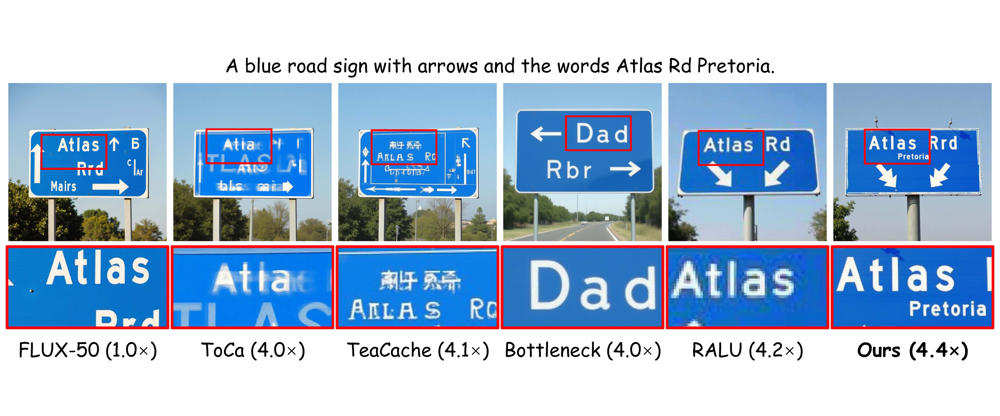
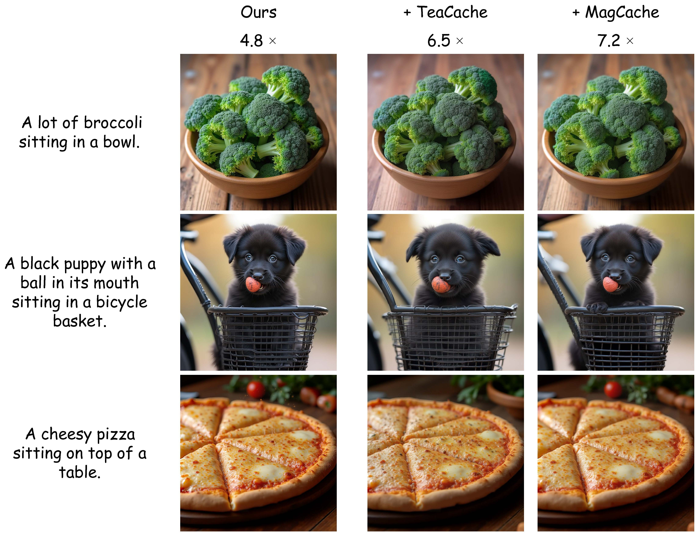

Phase-Aligned RoPE for Mixed-Resolution Diffusion Transformer
In submission
Haoyu Wu1, Jingyi Xu1, Qiaomu Miao1, Dimitris Samaras1, Hieu Le2
1Stony Brook University 2UNC-Charlotte

Our method enables stable mixed-resolution denoising (b), performing high-resolution denoising on salient regions (blue boxes) while simultaneously denoising the remaining areas at low resolution. (a) shows a low-resolution baseline. (c) presents image and video samples generated by our method.
Abstract
Rotary positional embeddings (RoPE) are widely used in diffusion transformers (DiTs) to encode spatial relationships, yet their behavior with mixed-resolution tokens remains underexplored. A natural approach is to rescale token positions from different resolutions into a unified coordinate system before attention, but we show this fails. Our analysis shows that with RoPE, the attention similarity score is a highly structured and periodic function of token distance, so rescaling distances across resolutions moves token pairs to different regions of this periodic function, leading to incorrect attention scores. Motivated by this, we introduce Phase-Aligned Mixed-Resolution Attention (PMA), a training-free mechanism that stabilizes mixed-resolution attention. PMA modifies the RoPE position mapping to enforce a consistent positional scale for every query-key pair, ensuring that relative distances are evaluated under a single reference scale. To further improve local coherence near resolution transitions, we incorporate a lightweight boundary refinement module that softly exchanges features across adjacent scales. Experiments on image and video diffusion models validate our analysis and demonstrate consistent improvements in visual fidelity and computational efficiency.
Position Interpolation Fails for Mixed-Resolution Tokens
Results for RoPE with linear position interpolation (PI) to the low- or high-resolution grid, versus our method.
RoPE Imposes a Sinusoidal Scale Bias That Breaks Under Mixed Resolution

RoPE imposes a sinusoidal scale bias on the attention function. We plot the mean normalized attention score κ(Δ) as a function of relative distance Δ on the Wan model, measured along three axes (time, height, width) across diffusion steps t∈{428, 749, 922}. κ(Δ) peaks sharply near Δ≈0 and oscillates with a clear sinusoidal structure at larger offsets. This is independent of token content since we measure this with random token pairs. This bias is amplified in RoPE-dominant heads, i.e., heads with a RoPE-dominance score greater than 0.085 (rds), and remains stable across timesteps.
Method

Phase-Aligned Mixed-Resolution Attention (PMA). For each attention call, PMA measures RoPE offsets in the query's native units by rescaling key positions to the query grid, aligning RoPE phases across resolutions for stable mixed-resolution denoising. (a) and (b) illustrate baselines that interpolate positions to LR and HR grids.
Video Results
Text-to-video generation with Wan 2.1.
Image Results
Mixed-resolution generation with FLUX.1-dev

Comparison with diffusion acceleration methods

Integration with orthogonal diffusion acceleration methods

2048x2048 samples generated by our method
Acknowledgements
- We are grateful to Meher Gitika Karumuri, Brandon Smith, Amogh Gupta, and Vidya Narayanan for their insightful comments and valuable discussions. This work was supported in part by NSF grants IIS-2123920 and IIS-2212046.
- The website template was borrowed from Mip-NeRF 360 and VolSDF.